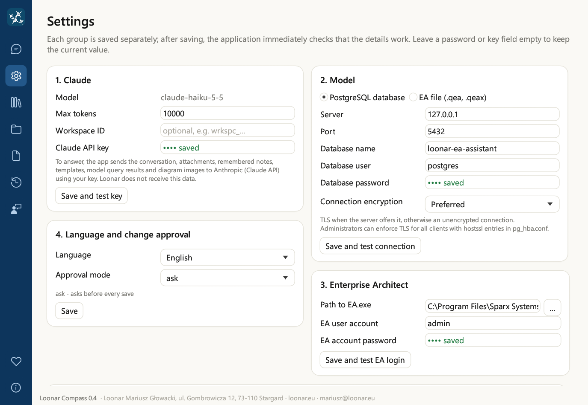
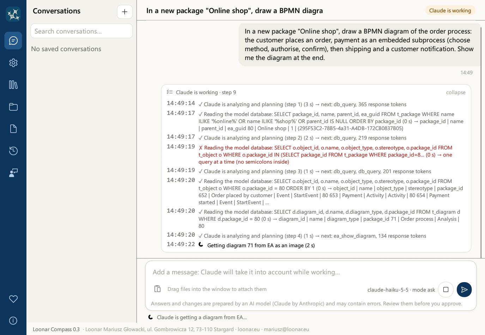

This is the documentation of version 0.4. The newest version is 0.6: go to the newest documentation
User guide
1. What Loonar Compass is
Loonar Compass is a standalone Windows desktop application: an AI assistant for working with an Enterprise Architect model (Sparx Systems). You write to it in plain language, and it:
- reads the model (packages, elements, diagrams, connectors, attributes and operations) and describes what is in it,
- analyzes the model: the impact of changing an element on the rest of the model, where operations are used, elements without connectors,
- changes the model: creates packages, diagrams, elements and connectors, adds attributes and operations to classes, sets keywords and tagged values, lays out elements on diagrams, moves them, removes an element from a diagram, deletes objects from the model, colors them, adds legends, copies packages and creates baselines of them,
- draws diagrams from a description, a photo, a sketch or an attached file,
- shows diagrams as images in the chat, just as Enterprise Architect draws them,
- prepares documents from the model's content: Word, Excel, PNG images and Confluence pages, also based on templates,
- remembers notes between conversations (modeling conventions, preferences, corrections).
The application uses the Claude Haiku 5.5 language model (Anthropic) over the Internet. It connects to the EA model in two ways: it reads it directly (from the PostgreSQL database or from the .qea/.qeax file) and writes to it through Enterprise Architect, using the model user account given in the settings when the model has one. With a model file you have open in EA, the changes go through your EA window; otherwise EA runs in the background.
The interface and the assistant's answers are available in four languages: Polish, English, German and French (chapter 5). Answers and changes are prepared by an AI model and may contain errors: review them before you approve them (chapter 12).
4. Application window and navigation
On the left side of the window there is a navy-blue navigation bar with icons. When you hover the mouse over an icon, its name appears. Clicking switches the view.
| Icon | What it contains |
|---|---|
| Chat | The list of conversations and the conversation with the assistant (chapters 6 and 13) |
| Settings | Claude API key, model database, Enterprise Architect, language and approval mode, new releases, Confluence (chapter 5) |
| Assistant memory | Notes the assistant has remembered between conversations (chapter 11) |
| Document templates | Document templates that the assistant fills with content from the model (chapter 10) |
| Model audit log | The assistant's saves to the model, with export to Excel (chapter 12) |
| Changelog | The list of features and known limitations of each version |
| Report a bug | A bug report form with images (chapter 16) |
| Support the project (heart icon, at the bottom of the bar) | Voluntary support for the development of the application, links to GitHub and loonar.eu |
| About (at the very bottom of the bar) | Version, application owner, links (privacy policy, source code on GitHub, loonar.eu), trademark notice, license text and the licenses of the open-source components (chapter 18) |
An orange “!” on the Settings, Assistant memory and Document templates icons means that after a language change the translation has not finished yet (chapter 5).
Support the project. Loonar Compass is free, also for commercial use, and it will stay free. If it saves you time, you can support its development with a voluntary contribution: the Support on suppi.pl button opens suppi.pl/loonar. The contributions pay, among other things, for a code-signing certificate. Other ways to help: report bugs and ideas (Report a bug), recommend the application to other Enterprise Architect users or star the project on GitHub.
Chat view
- The list of conversations on the left is grouped into “Today”, “Yesterday”, “Last 7 days” and “Earlier”. You start a new conversation with the + button. The selected conversation is highlighted.
- The conversation header shows its title and, while the assistant is working, the “Claude is working” indicator.
- Messages: yours are in a beige bubble, the assistant's answers have the application icon. Each message shows the time (older ones also the date).
- The new conversation screen shows the logo and a hint about what you can do.
- The message card at the bottom: the text field, the paste button, the model and approval mode, and the round send and stop buttons (chapter 6). Below the card, a reminder says that answers and changes are prepared by an AI model.
5. Settings and language
The Settings view has six cards. You save each one separately with the button below the card, and the application immediately checks that the details work. The result appears below the button: green with a description or red with the cause of the error.

| Card | Fields | What the test checks |
|---|---|---|
| 1. Claude | Model (Claude Haiku 5.5, read-only), Max tokens (the length limit of a single model answer), Claude API key. A note below the fields says what the application sends to Anthropic (chapter 14). | Sends a short request to the model |
| 2. Model | Choice: PostgreSQL database (Server, Port, Database name, Database user, Database password stored in Windows Credential Manager, Connection encryption) or EA file (.qea, .qeax) (Model file; the … button opens a file selection dialog) | Database: connects, counts packages, elements and diagrams, says whether the connection is encrypted and warns if the database user is a superuser. File: opens it read-only and counts packages, elements and diagrams |
| 3. Enterprise Architect | Path to EA.exe (the … button opens a file selection dialog), EA user account, EA account password (for a model file without security, both stay empty) | Opens the model in EA (a model file you have open: in your EA window) and logs in with the given account |
| 4. Language and change approval | Language; Approval mode: ask, plan or auto (chapter 12); after a language change, also the Translate now button | Saving only |
| 5. New releases (newsletter) | Email address and consent to news about new releases, with an information note and a link to the privacy policy (chapter 16) | Prepares a message in the mail program |
| 6. Confluence | Confluence address, Email (Cloud only), Token, Space key, Parent page ID (chapter 9). The address must start with https:// (http:// only for a server on the same computer). | Connects to Confluence with the given token and checks the space |
An empty password or key field means “no change”. The label saved next to a field indicates that the value is already stored. The API key, the passwords and the Confluence token are kept in Windows Credential Manager, never in the settings file. The database password must not contain a semicolon (;), because Enterprise Architect cannot pass it in its connection string.
Default values. When there are no settings yet, the server, database name, EA user account and password fields are empty (the Server field shows the gray hint “e.g. 127.0.0.1”), the port is 5432, the database user is postgres, the path to EA.exe is C:\Program Files\Sparx Systems\EA\EA.exe, the approval mode is ask and Max tokens is 10000. Existing settings are not changed.
Max tokens. If the assistant stops working with a message about a truncated answer, increase this value (for example to 20000). The limit costs nothing by itself: you pay for the text actually generated.
Package locking while saving is always on, which is why it is not in the settings.
Changing the language
The application works in four languages: Polish, English, German and French. You choose the language in the installer (English by default) and change it on the “4. Language and change approval” card:
- Choose a language from the Language list.
- Click Save. The interface switches to the new language, and the assistant answers in it from the next message.
- The application carries your content over to the new language: it replaces untouched default templates with the versions in the new language, and the assistant's memory and your own and modified templates are translated by Claude.
Only the memory and the templates are translated. Conversation history is never translated: conversations stay in the language in which you held them.
Database connection encryption
The Connection encryption field on the “2. Model” card (PostgreSQL database) decides whether the assistant reads the model over TLS:
| Setting | Effect |
|---|---|
| Preferred (default) | TLS when the server offers it; otherwise an unencrypted connection. Works with any server. |
| Required | TLS is required: without it the application does not connect. The server certificate is not verified. |
| Required, certificate verified | TLS is required, and the server certificate is verified against the Windows certificate store (including company certificates), together with the server name. |
- The connection test says whether the connection is encrypted: “The connection is encrypted (TLS).” or “The connection is NOT encrypted: the server does not offer TLS.”.
- With certificate verification, the name in the Server field must match the name in the server certificate.
- The database administrator can enforce TLS for all clients with
hostsslentries in thepg_hba.conffile. - The setting applies to the assistant's reading of the model. Enterprise Architect's own connection to the database (when saving) follows EA's settings.
6. Talking to the assistant

Writing
You type a message in the message card at the bottom of the window. The card contains the text field, the paste button, the model name and the current approval mode, and round buttons: Send and, while the assistant is working, Stop. Below the card you see the reminder: “Answers and changes are prepared by an AI model (Claude by Anthropic) and may contain errors. Review them before you approve.”
| Key | Action |
|---|---|
| Enter | Sends the message |
| Shift + Enter | New line in the message |
| ↑ in an empty field | Recalls your last message from this conversation; further presses go back to earlier ones, ↓ goes forward again |
| Ctrl + V | Pastes text, and when the clipboard contains an image or files, adds them as attachments |
The message field grows with the text. Spelling errors are underlined in red using the Windows system dictionary, in the language from the system settings.
Attachments
You can attach up to 5 files to a message, each up to 10 MB. Ways to do it: drag files into the window (from Explorer or from a browser), paste them from the clipboard (Ctrl + V) or use the paste button in the message card.
| File type | What the assistant sees |
|---|---|
| Images (PNG, JPG) | The image: a photo of a whiteboard, a sketch, a screenshot |
| Images (GIF, WebP) | The image; in the chat, such an attachment is shown as a file card, not as an image |
| The whole document | |
| DOCX | The text of the document |
| Text files (BPMN, XML, CSV, JSON, code…) | The content of the file; the file must be saved in UTF-8 |
| XLSX, PPTX, DOC and other binary files | Not read: the assistant only learns that the content of the file cannot be passed to it |
| ZIP | The files inside it, each according to its type: at most 20 files and 30 MB in total; a ZIP inside a ZIP is not unpacked |
While the assistant is working
- Below the messages you see the steps card: what the assistant is doing right now, how long it takes and a short result of each step (in Polish, German and French the short results are translated, and the technical details stay in English). While the assistant is working, the card is expanded, and when it finishes, it collapses to a single line; clicking the card header expands it again.
- You can keep writing: the next message goes into a queue and the assistant takes it into account at the next step, without interrupting its work.
- The Stop button stops the work after the current step. A step that is already running (for example saving to EA) is completed.
- An answer can take at most 24 steps. If the assistant has not finished by then, it stops so as not to run in an endless loop; send a new message (for example “continue”) to carry on.

What can the assistant do? The assistant knows the application's features from the changelog. Ask it: “What can you do in this application?”.
7. Working with the Enterprise Architect model
Write as you would to a colleague who knows EA. Refer to packages and diagrams by name. The assistant refers to model objects by name, package and GUID. Below are examples of requests.
Reading
The diagram shown appears in the chat as an image. Below it are the Save as… and Open full size buttons.
Change impact analysis
The assistant goes from the given element along relationships deep into the model (up to 6 levels, in one or both directions, optionally only along selected relationship types). For each affected element it gives the relationship through which the impact arrives, the path from the starting element and the diagrams on which the element appears. You can get the result as a description, an image, a Word document or an Excel workbook.
Where operations are used
For a class, component or interface, the assistant finds where its operations (services) are called: on sequence diagrams (messages to the element or its lifeline) and activity diagrams (actions calling the operation), with the package and the caller. It also lists the operations not used on any diagram.
Drawing
BPMN subprocesses
- Embedded: the steps of the subprocess are its child elements and are drawn inside its rectangle on the same diagram.
- Collapsed: the steps are on a separate diagram, and double-clicking the subprocess opens that diagram. The assistant can also link a subprocess (or another element) to an existing diagram as a composite diagram.
- The assistant adds new steps to an existing subprocess.
Changes to an existing model
The assistant also changes the position and size of an element on a diagram without removing it (connectors stay), removes an element from a diagram while keeping it in the model, and changes the name, description and stereotype of an existing diagram.
Keywords and legends
The assistant sets elements' keywords (the Keywords field in EA) and tagged values, and creates a diagram legend with automatic coloring, as in EA: elements (by keyword, stereotype, status or type) and connectors (for example by stereotype) get a color from the legend, and the legend shows the value, color and label.
Connector lines
- Line style (like Line Style in EA): direct, auto routing, custom line, orthogonal square, orthogonal rounded, tree and lateral; for selected connectors or all connectors on the diagram.
- Connector route: the assistant routes the line through the given bend points and the points where it meets the element edges, for example following a sketch in a screenshot.
- Hiding connectors on a single diagram (and showing them again): the relationship stays in the model and on other diagrams, so you can declutter a dense diagram without deleting relationships.
Package copy and baseline
- Package copy creates a duplicate of the package with all its contents.
- A baseline is a saved version of a package in EA. Before deleting or substantially restructuring an existing package, the assistant is instructed to create a baseline, but this is not enforced: for important packages, ask for a baseline explicitly and use the ask mode.
- Restoring is done in Enterprise Architect: right-click the package, choose Manage Baselines, select the baseline and use Compare/Restore. The assistant does not restore baselines itself, because restoring through automation makes EA hang.
Good to know
- The first EA call takes from a few to over ten seconds, because the application starts Enterprise Architect in the background and opens the model. Subsequent saves and diagram retrievals take less than a second. After 10 minutes without calls, the background EA closes and releases the license. Closing the application also closes its EA session.
- Locks. In a model with security enabled, the assistant locks an object under its own account while saving and releases the lock afterwards. It will not change an object locked by another user; the message states who holds the lock on the element (account or group, since when), its package and diagram.
- Deletion is permanent. Deleting a package deletes all its contents. With important models, use the ask mode (chapter 12), use baselines and back up the database.
- Partial saves. When one operation of a save fails, the earlier operations of that save stay in the model. The message says what was saved.
- Check the result. The assistant can make mistakes: misread a photo, choose a different element type or lay out a diagram illegibly. Ask it to show the diagram after the changes and to make corrections.
- Large diagrams are saved by the assistant in several steps. This is normal.
8. Working with the open EA window
If you have the same model open in Enterprise Architect, the assistant works together with your EA window:
- it knows what you have open and selected: which diagram is open and which elements are selected on the diagram or in the Project Browser. So you can write “this element” or “the selected tasks”,
- it opens diagrams in your EA window and highlights elements in the Project Browser,
- after saving, it refreshes the changed diagrams and packages in your window by itself, without pressing F5.
Only when the EA window is not open or shows a different model does the assistant work without it; you will then see the changes after refreshing the package in EA (F5). The connection string of your EA window is never sent to the model.
9. Documents: Word, Excel, images, Confluence
The assistant prepares documents from the content of the model and the conversation. The finished file appears in the chat as a card with buttons.
| Type | What it contains | Buttons in the chat |
|---|---|---|
| Word (DOCX) | Headings, paragraphs, lists, tables, diagrams from EA and images drawn earlier in the conversation | Open, Save as… |
| Excel (XLSX) | Several sheets, headers with a filter and a frozen first row, numbers as numbers; for example a list of elements, a matrix, the result of an impact analysis | Open, Save as… |
| Image (PNG) | A matrix (for example of use cases and requirements), a table, a chart, a schematic. The assistant sees the result and can correct it. | Save as…, Open full size |
| Confluence page | The page code for the source editor, and diagrams and images as files | Copy page code, Open images folder, Save as… |
Confluence pages
The assistant prepares a page in the Confluence source editor format (storage XHTML): headings, tables, lists, a table of contents, panels (info, note, warning, tip, expand section), statuses, Jira issues, user mentions and code blocks. Diagrams from EA and images are added as attachments. The page code is saved in the attachments folder, and the page images in a folder next to it (<page>_images).
Pasting manually (without Confluence settings):
- Click Copy page code on the page card.
- In Confluence, open the page for editing, open the Source Editor, paste the code and confirm.
- Click Open images folder and add the images to the page as attachments.
Publishing through the assistant. Once you have filled in the “6. Confluence” card, the assistant publishes the page via the REST API at your request: it creates a new page under the parent page or updates an existing one (given by ID or title). Images are uploaded as attachments; existing ones get a new version. Diagrams are exported from EA anew on every publication, so republishing refreshes the page after changes in the model. The assistant remembers the pages it has published. The connection uses HTTPS only (http:// is accepted only for a server on the same computer).
| Field of the “6. Confluence” card | What to enter |
|---|---|
| Confluence address | On your organization's own servers (Data Center), for example https://confluence.example.com; in the cloud (Cloud) https://your-site.atlassian.net/wiki |
| Email (Cloud only) | For Confluence Cloud: the account's email address. For Data Center, leave it empty. |
| Token | Data Center: a personal access token (Profile → Personal Access Tokens). Cloud: the account's API token. The token is stored in Windows Credential Manager. |
| Space key | The space key, for example ARCH |
| Parent page ID | Optional: the ID of the page under which new pages are created |
Save the card with the Save and test Confluence connection button.
10. Document templates
A template tells the assistant how to build a document: which sections it should have and what to put in them. The assistant fills it with content from the model and prepares a Confluence page or a Word document.
After installation, the following default templates are available:
- Preliminary feasibility analysis,
- BRD - Business requirements,
- System change description,
- Process description.
The “Document templates” view
- A list of templates with a short description.
- Use inserts into the chat a request to prepare a document based on the template. Complete it (for example with the name of a package or process) and send it.
- Edit opens the template file in Notepad.
- Open templates folder opens the
templatesfolder in Explorer (older installations may still use theszablonyfolder).
Your own templates
Templates are Markdown files with instructions for the assistant. The first line has the form > Template: description; the description is shown in the list. You can modify the existing templates, add your own files to the templates folder or ask the assistant to create a template from a sample document. In the ask and plan modes, the assistant asks for your approval before it overwrites a template.
11. Assistant memory
The assistant keeps notes between conversations: modeling conventions, your preferences, corrections and facts about projects. It knows them in every new conversation. A note on the same topic is updated instead of duplicated, and outdated ones are removed.
The assistant saves a note by itself when it learns something worth remembering, and tells you so in one sentence. You can also ask it explicitly, starting with “remember…”:
In the ask and plan modes, saving a note requires your approval, just like a change to the model. Saving a note does not interrupt the assistant's work on the current task. The whole content of the memory is sent to Claude with every request (chapter 14).
The “Assistant memory” view
- A list of notes with dates.
- Remove next to a note deletes it.
- Open memory folder opens the
memoryfolder in Explorer. The notes are Markdown files in it, and the index is in theMEMORY.mdfile.
12. Approving changes and the audit log
You set the mode in the Settings view, on card 4. It decides whether and when the application asks for approval before saving to EA. Reading the model and showing diagrams never require approval. The current mode is also visible in the message card.
| Mode | When it asks for approval | For whom |
|---|---|---|
| ask | Before every save, including saving a note to the memory and overwriting a template | Working on an important model; full control |
| plan | Once, before the first save in a given assistant answer. Further saves in that answer go ahead without asking, except deleting objects, moving elements and diagrams, and copying packages: these always ask again. | Larger tasks, when the first save shows the direction |
| auto | Never (exception: publishing to Confluence) | A test model or work that is easy to undo |
When approval is needed, a “Claude wants to save changes to the model” panel appears above the message field, with a description of the changes (how many packages, diagrams, elements and connectors, and the names of the objects being deleted, moved or copied) and the Approve and Reject buttons. A rejected save does not change the model; the assistant is informed of the rejection and may suggest something else.

Publishing to Confluence always asks for approval, in every mode, and says when an existing page will be replaced (chapter 9).
Audit log
Every save by the assistant to the model, including failed ones, goes into the audit log (saves you rejected are not recorded, because nothing was saved). The Model audit log view shows the latest 200 entries, newest first: time, result, EA account, database and changes. The Export to Excel button saves the whole log as an XLSX workbook, for example for reviewing changes as a team, and Open log file opens the audit_log.jsonl file.
13. Conversations: history, search, background work
- New conversation: the + button above the list of conversations. Every conversation is saved and comes back after the application is restarted.
- Groups: conversations are grouped into “Today”, “Yesterday”, “Last 7 days” and “Earlier”.
- Search: the “Search conversations…” field filters the list by title and by message content.
- Renaming: click the pencil next to the selected conversation, type a name; Enter saves, Esc cancels.
- Several conversations at once: while the assistant is working, you can start a new conversation or switch to another one. The work already started continues in the background.
- Deleting: conversations cannot be deleted in the application. If you need to, close the application and delete the conversation's file in the
historyfolder (chapter 14).
| Dot next to a conversation | Meaning |
|---|---|
| ● orange | The assistant is working in this conversation (or waiting for your approval to save) |
| ● green | The assistant has finished working in the background, and you have not looked at the result yet |
Saves to EA from different conversations are carried out one after another, not simultaneously. When the chat is scrolled up, the circle with an arrow above the message field takes you to the end of the conversation.
14. Data, security and privacy
Where your data is
| What | Where |
|---|---|
| Program | Just for you: %LOCALAPPDATA%\Programs\Loonar Compass; for all users: %ProgramFiles%\Loonar Compass. The folder also contains the user guide, the license, the changelog and THIRD-PARTY-NOTICES.txt. |
Settings (app.properties, without passwords or keys) | The user data folder %APPDATA%\Loonar Compass. Each user of the computer has their own. |
Conversation history (history folder) | |
Attachments and the files prepared by the assistant: Word, Excel, PNG and Confluence pages with their image folders <page>_images (attachments folder) | |
Assistant memory (memory folder with the MEMORY.md index) | |
Document templates (templates folder) | |
Audit log (audit_log.jsonl) and the list of published Confluence pages (confluence_pages.json) | |
| Claude API key, EA account password, database password, Confluence token | Windows Credential Manager, entries “loonar-compass” (encrypted by the system). Nothing secret is stored in app.properties. |
Conversation history is stored as plain files in your Windows profile, protected by your Windows account; the application does not encrypt it.
What is sent to Anthropic
So that the assistant can answer, every request to the Claude service (Anthropic) contains: the content of the conversation, the attached files, the full content of the assistant's memory, the list of templates with their descriptions, and what the assistant has read from the model in that conversation, i.e. the results of its database queries (names and descriptions of packages, elements, diagrams) and images of the diagrams shown. The whole database is not sent, only what the assistant asked for. After a language change, the content of the memory and templates to be translated is also sent to Claude. The data goes to Anthropic with your API key; Loonar does not receive it.
The assistant's permissions
- The assistant reads the database in a read-only session, and a model file read-only, with a time limit for each query; server functions that read files or affect other sessions are blocked. All changes go through Enterprise Architect, under the account given in the settings, so the permissions and locks of that account apply to them.
- In Confluence, the assistant works with the permissions of the token from card 6 and publishes only after your approval.
- The assistant has no access to files on disk other than those you attach to it yourself and its own memory and templates folders. Images drawn by the assistant cannot read files from disk or from the network.
- The assistant treats the content of attachments, documents and the model as data, not as instructions.
- The connection string of your open EA window, with its login details, is never sent to the model.
Connections and encryption
- The Claude API and Confluence are used over HTTPS only.
- The connection to the model database supports TLS (card 2, see “Database connection encryption” in chapter 5). Tip: administrators can enforce TLS for all clients with
hostsslentries inpg_hba.conf. Enterprise Architect's own connection to the database follows EA's settings. - The application uses the proxy from the Windows Internet settings and the HTTPS_PROXY and ALL_PROXY variables. Proxies with a PAC script and NTLM/Kerberos proxy authentication are not supported.
- Temporary Claude API errors (overload 529 or other 5xx errors, rate limit 429) are retried automatically.
15. Troubleshooting
| Symptom | What to do |
|---|---|
| The application opens on the “Settings” view | Settings or secrets are missing. Fill in the cards and save each one with its “Save and test…” button. |
| “The Claude API rejected the API key (401)” | The key is wrong or has been revoked. Paste the current key from the Anthropic Console on card 1. |
| “The Claude API returned … with a response that is not from the API” | A proxy or firewall is probably blocking api.anthropic.com. Ask your IT department to allow the connection. The application uses the proxy from the Windows Internet settings or the HTTPS_PROXY / ALL_PROXY variables; PAC scripts and NTLM/Kerberos proxy authentication are not supported. |
| “The Claude API rate limit was reached (429)” or “The Claude API is overloaded or temporarily unavailable” | The application has already retried the request several times. Wait a moment and send the message again. |
| File test: “this does not look like an Enterprise Architect model file” | Choose a .qea or .qeax project file created by Enterprise Architect 16 or later. Older .eap/.eapx files must first be converted to .qea in EA (project transfer). |
| Database test: no connection | Check the server, port, database name, user and password, and whether the PostgreSQL server accepts connections from this computer. The database password must not contain a semicolon (;). |
| “The connection is NOT encrypted: the server does not offer TLS”, or the connection fails with “Required” or “Required, certificate verified” | The server does not offer TLS: ask the database administrator to enable it. With certificate verification, the server certificate must be trusted in the Windows certificate store (for example through your company's certificate authority) and the server name must match the certificate. |
| The database test warns that the account is a superuser | Superuser rights are not needed. Ask the administrator for a normal account with read and write rights on the model tables, without superuser rights: the assistant only reads the database, but Enterprise Architect saves changes with the same account. Enter it on card 2. |
| “EA did not respond within 300 s” | Most often a wrong model user account or password (EA then waits at an invisible login window) or no free license. Correct the details on card 3 and use “Save and test EA login”. |
| The first save or the first diagram takes a long time | This is Enterprise Architect starting in the background (from a few to over ten seconds). Subsequent calls are fast. |
| “The model's answer was cut off at the limit of … tokens” | Increase “Max tokens” on card 1 or ask for the task to be done in smaller parts. |
| “The assistant took 24 steps without finishing” | The answer reached the step limit. Send a new message, for example “continue”, and the assistant carries on from where it stopped. |
| Changes are not visible in Enterprise Architect | If the same model is open in EA, the assistant refreshes it by itself. Otherwise, refresh the package in the Project Browser (F5) or open the diagram again. |
| “Cannot lock the object” | The object is locked by another model user; the message says who. Release the lock in EA or ask its owner to do so. |
| Orange “!” on the Settings, Assistant memory and Document templates icons | After a language change, the translation is waiting for a connection to Claude. Check the API key on card 1 and click “Translate now” on card 4, or restart the application. |
| Publishing to Confluence fails | Check card 6 with the “Save and test Confluence connection” button: the address (it must start with https://), token, space key, and for Cloud also the email address. You can also paste the page manually with the “Copy page code” button. |
| After a baseline you need to go back to an earlier version of the package | In EA: right-click the package → Manage Baselines → Compare/Restore. |
| The assistant claims it cannot do something | Ask: “What can you do in this application?”. If the feature is on the list in the “Changelog” view, tell it so explicitly and ask it to try again. |
| Files cannot be dragged into the window | The application was started as administrator. Close it and start it with the normal shortcut. |
| “The program hit an unexpected error and has to close” | Your conversations and settings are saved. The details are in the file %TEMP%\loonar-compass-crash.log: attach it to a bug report (chapter 16). |
| “The settings file … contains an error” | The message gives the faulty value. Correct it on the relevant card and save the card again. |
| Windows SmartScreen warns when the installer starts | The installer is not digitally signed yet. Click “More info” and then “Run anyway”. With Smart App Control turned on, Windows blocks unsigned applications; wait for the signed version. |
16. Reporting bugs and new releases
Report a bug
- Click the Report a bug icon in the navigation bar.
- Enter a subject and a description: what you were doing, what you expected, what happened. The description is required.
- Add images, for example screenshots: drag them into the window, paste them from the clipboard (Ctrl + V) or choose them from disk. The added images are shown as thumbnails; together they can take up to 15 MB. Remove personal and confidential data from the screenshots before sending.
- Optionally, enter the email address to which I should reply. The option “Include technical information (application version, system, model, approval mode, last message; no passwords or keys)” is selected by default; clear it if you do not want to include this information.
- Click Send report. A ready message to the author, with the images as attachments, opens in the Windows mail program. Check it and send it.
The report goes to Loonar Mariusz Głowacki and is used only to answer it and to improve the application; the details are in the privacy policy, linked from the form. The temporary copies of the images are deleted as soon as the mail program has taken them. If the mail program does not accept attachments from other applications, a message without images opens together with the folder containing the images: drag them into the message. Only in this case do the copies stay in that folder.
New releases (newsletter)
On the “5. New releases (newsletter)” card in the settings, enter your email address and select “I want to receive news about new releases”: a short email when a new version is released, with a description of the changes and where to download it, without ads. Your choice is stored in the settings, and subscribing and unsubscribing are sent to the author as a message from the mail program. Your address is used only for this news, based on your consent, until you withdraw it: clear the option and save, or write an email. The card links to the privacy policy.
18. License, trademarks and contact
License. Loonar Compass is freeware: you may use it free of charge on any number of computers, also for professional and commercial purposes, without time or territorial limits, and pass on unmodified copies free of charge. Modifying the application is prohibited. The license also sets out rules on AI-generated output (you review it before you approve it or rely on it), on data and on open-source components. The Polish version of the license is binding; the English, German and French versions are translations. The full text is in the About view and in the installation folder: LICENSE.txt in the installation language and, for languages other than Polish, LICENSE.pl.txt with the binding Polish version.
Privacy. The application collects no data (no telemetry). How bug reports and newsletter sign-ups are processed is described in the privacy policy; the owner's details are in the legal notice.
Open-source components. The application includes open-source libraries and fonts; each keeps its own license. The list and the license texts are in the THIRD-PARTY-NOTICES.txt file in the installation folder; in the About view, click Show licenses of the components.
Support. The application is free and will stay free. If you want to support its development, use the Support the project view or go to suppi.pl/loonar. The source code is at github.com/loonar-eu/loonar-compass.
Application owner: Loonar Mariusz Głowacki, ul. Gombrowicza 12, 73-110 Stargard.
Contact: mariusz@loonar.eu, loonar.eu. The most convenient way to report bugs is the Report a bug view.
Loonar Compass 0.4. Sparx Systems and Enterprise Architect are registered trademarks of Sparx Systems Pty Ltd. Claude and Anthropic are trademarks of Anthropic, PBC. Atlassian, Confluence and Jira are trademarks of Atlassian. Microsoft, Windows, Word and Excel are trademarks of the Microsoft group of companies. PostgreSQL is a registered trademark of the PostgreSQL Community Association. Loonar Compass is an independent product and is not affiliated with, endorsed or sponsored by these companies.